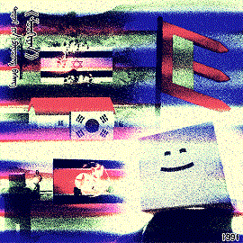

ᠪᠪᠥᠪᠥᠪᠥᠪᠥᠪᠥᠪᠥᠪᠥᠪᠥᠪᠥᠪᠥᠪᠥᠪᠥᠪᠥᠪᠥᠪᠥᠪᠥᠪᠥᠪᠥᠪᠥᠪᠥᠪᠥᠪᠥᠪᠥᠪᠥᠪᠥᠪᠥᠪᠦᠪᠥᠪᠥᠪᠥᠪᠥᠪᠥᠪᠥᠪᠦᠪᠥᠪᠦᠪᠥᠪᠥᠪᠥᠪᠥᠪ
最終更新日：2024/05/05
ᠲᠡᠷᠡ ᠬᠡᠯᠡᠭᠰᠡᠨ ᠨᠢ ᠂ ᠪᠢ ᠶᠠᠭᠤᠨ ᠤ ᠲᠡᠷᠡ ᠮᠦᠴᠡ ᠶᠢ ᠰᠡᠷᠡᠵᠦ ᠮᠡᠳᠡᠭ᠍ᠰᠡᠨ ᠦ ᠳᠠᠷᠠᠭᠠ ᠂ ᠬᠡᠷᠪᠡ ᠪᠢ ᠶᠠᠭᠤ ᠶᠢ ᠰᠡᠷᠡᠵᠦ ᠮᠡᠳᠡᠭ᠍ᠰᠡᠨ ᠦᠭᠡᠢ ᠪᠣᠯ ᠴᠢ ᠨᠠᠮᠠᠢ᠌ ᠲᠠᠨ ᠮᠥᠨ ᠭᠡᠳᠡᠭ᠍ ᠢ ᠰᠡᠷᠡᠵᠦ ᠮᠡᠳᠡᠨᠡ ᠃

이건은 쀄쫘ㅏㅏㅏㅏㅏㅏㅏㅏㅏㅏ
내
똥
쀘
오늘은 좋은 대변을 보겠읍니다
꽸 ㅆㅆ 씌 뉐쀆뫴퀘
쓰